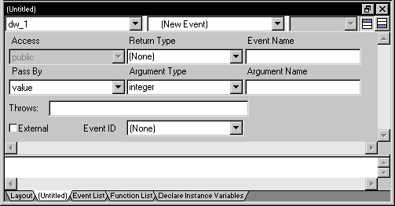
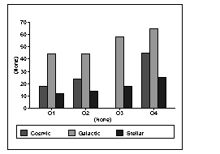

Previous Next
Accessing data properties
To access properties related to a graph's data during
execution, you use DataWindow methods for graphs. There are three categories
of these methods related to data:
- Methods that provide information about a graph's
data
- Methods that save data from a graph
- Methods that change the color, fill patterns, and
other visual properties of data
How to use the methods
To call the methods for a graph in a DataWindow control, use
the following syntax:
DataWindowName.methodName ( "graphName", otherArguments... )
For example, there is a method CategoryCount, which returns
the number of categories in a graph. So to get the category count
in the graph gr_printer (which is in the DataWindow control
dw_sales), write:
Ccount = dw_sales.CategoryCount("gr_printer")
Getting information about the data
There are quite a few methods for getting information about
data in a graph in a DataWindow control at execution time. For all
methods, you provide the name of the graph within the DataWindow
as the first argument. You can provide your own name for graph controls
when you insert them in the DataWindow painter. If the presentation
style is Graph, you do not need to name the graph.
PowerBuilder These methods get information about the data and its display. For
several of them, an argument is passed by reference to hold the
requested information:
Table 5-1: Common methods for graph DataWindows in PowerBuilder
| Method |
Information
provided |
|---|
| CategoryCount |
The number of categories in a graph |
| CategoryName |
The name of a category, given its number |
| DataCount |
The number of data points in a series |
| FindCategory |
The number of a category, given its name |
| FindSeries |
The number of a series, given its name |
| GetData |
The value of a data point, given its
series and position (superseded by GetDataValue, which is more flexible) |
| GetDataPieExplode |
The percentage at which a pie slice is
exploded |
| GetDataStyle |
The color, fill pattern, or other visual
property of a specified data point |
| GetDataValue |
The value of a data point, given its
series and position |
| GetSeriesStyle |
The color, fill pattern, or other visual
property of a specified series |
| ObjectAtPointer |
The graph element the mouse was positioned
over when it was clicked |
| SeriesCount |
The number of series in a graph |
| SeriesName |
The name of a series, given its number |
Web ActiveX These methods get information about the data and its display. There
are additional helper methods available whenever the equivalent PowerBuilder
method uses an argument passed by reference. These helper methods
are identified in the second column of the following table (and
are described in the DataWindow Reference
):
Table 5-2: Common methods for graph DataWindows in Web ActiveX
| Method |
Information
provided |
|---|
| CategoryCount |
The number of categories in a graph. |
| CategoryName |
The name of a category, given its number. |
| DataCount |
The number of data points in a series. |
| FindCategory |
The number of a category, given its name. |
| FindSeries |
The number of a series, given its name. |
| ObjectAtPointer |
The graph element the mouse was positioned
over when it was clicked. Call ObjectAtPointerSeries and ObjectAtPointerDataPoint
to get additional information. |
| SeriesCount |
The number of series in a graph. |
| SeriesName |
The name of a series, given its number. |
| Getting information
about a data point's appearance |
|
| GetDataPieExplode |
The percentage at which a pie slice is
exploded. Call GetDataPieExplodePercentage to retrieve the requested value. |
| GetDataStyleColor |
The color of a specified data point.
Call GetDataStyleColorValue to retrieve the requested value. |
| GetDataStyleFill |
The fill pattern of a specified data
point. Call GetDataStyleFillPattern to retrieve the requested value. |
| GetDataStyleLine |
The line style and width of a specified
data point. Call GetDataStyleLineWidth and GetDataStyleLineStyle
to retrieve the requested values. |
| GetDataStyleSymbol |
The symbol of a specified data point.
Call GetDataStyleSymbolValue to retrieve the requested value. |
| Getting a data
point's value |
|
| GetDataDate |
The value of a data point that contains
a date, given its series and position. Call GetDataDateVariable
to retrieve the requested value. |
| GetDataNumber |
The value of a numeric data point, given
its series and position. Call GetDataNumberVariable to retrieve
the requested value. |
| GetDataString |
The value of a string data point, given
its series and position. Call GetDataStringVariable to retrieve
the requested value. |
| Getting information
about a series' appearance |
|
| GetSeriesStyleColor |
The color of a specified series. Call GetSeriesStyleColorValue
to retrieve the requested value. |
| GetSeriesStyleFill |
The fill pattern of a specified series.
Call GetSeriesStyleFillPattern to retrieve the requested value. |
| GetSeriesStyleLine |
The line style and width used by a specified
series. Call GetSeriesStyleLineWidth and GetSeriesStyleLineStyle
to retrieve the requested values. |
| GetSeriesStyleOverlay |
Indication whether a series in a graph
is an overlay (that is, whether it is shown as a line on top of
another graph type). Call GetSeriesStyleOverlayValue to retrieve
the requested value. |
| GetSeriesStyleSymbol |
The symbol of a specified series. Call GetSeriesStyleSymbolValue
to retrieve the requested value. |
Saving graph data
PowerBuilder The following methods allow you to save data from the graph:
Table 5-3: PowerBuilder methods for saving data from a graph
| Method |
Action |
|---|
| Clipboard |
Copies a bitmap image of the specified
graph to the clipboard |
| SaveAs |
Saves the data in the underlying graph
to the clipboard or to a file in one of a number of formats |
Web ActiveX You can save an image of the graph on the clipboard, but you cannot
save data in a file. Writing to the file system is a security violation
for an ActiveX control:
Table 5-4: Web Active X method for saving data from a graph
| Method |
Action |
|---|
| Clipboard |
Copies a bitmap image of the specified
graph to the clipboard |
Modifying colors, fill patterns, and other data
PowerBuilder The following methods allow you to modify the appearance of data
in a graph:
Table 5-5: PowerBuilder methods for modifying the appearance of data
| Method |
Action |
|---|
| ResetDataColors |
Resets the color for a specific data
point |
| SetDataStyle |
Sets the color, fill pattern, or other
visual property for a specific data point |
| SetSeriesStyle |
Sets the color, fill pattern, or other
visual property for a series |
Web ActiveX These methods modify the appearance of data in a graph:
Table 5-6: Web ActiveX methods for modifying the appearance of data
| Method |
Action |
|---|
| ResetDataColors |
Resets the color for a specific data
point |
| SetDataColor |
Sets the color of a specified data point |
| SetDataFill |
Sets the fill pattern of a specified
data point |
| SetDataLine |
Sets the line style and width of a specified
data point |
| SetDataPieExplode |
Explodes a slice in a pie graph |
| SetDataSymbol |
Sets the symbol of a specified data point |
| SetSeriesColor |
Sets the color of a specified series |
| SetSeriesFill |
Sets the fill pattern of a specified
series |
| SetSeriesLine |
Sets the line style and width used by
a specified series |
| SetSeriesOverlay |
Specifies whether a series in a graph
is an overlay (that is, whether it is shown as a line on top of
another graph type) |
| SetSeriesSymbol |
Sets the symbol of a specified series |
Using graph methods
You call the data-access methods after a graph has been created
and populated with data. Some graphs, such as graphs that display
data for a page or group of data, are destroyed and re-created internally
as the user pages through the data. Any changes you made to the
display of a graph, such as changing the color of a series, are
lost when the graph is re-created.
Event for graph creation
To be assured that data-access methods are called whenever
a graph has been created and populated with data, you can call the
methods in the code for an event that is triggered when a graph
is created. The
event is:
- PowerBuilder Event ID pbm_dwngraphcreate, which you can assign
to a user event for a DataWindow control (described below)
- Web ActiveX The onGraphCreate event
The graph-creation event is triggered by the DataWindow control
after it has created a graph and populated it with data, but before
it has displayed the graph. By accessing the data in the graph in
this event, you are assured that you are accessing the current data
and that the data displays the way you want it.
Setting up the PowerBuilder user event
PowerBuilder provides an event ID, pbm_dwngraphcreate,
that you can assign to a user event for a DataWindow control.
 To access data properties of a graph in a DataWindow
control:
To access data properties of a graph in a DataWindow
control:
Place the DataWindow control in a window
or user object and associate it with the DataWindow object containing
the graph.
Next you create a user event for the DataWindow control that
is triggered whenever a graph in the control is created or changed.
Select Insert>Event from the menu bar.
The Script view displays and includes prototype fields for
adding a new event.
Select the DataWindow control in the first drop-down
list of the prototype window.
If the second drop-down list also changes to display an existing DataWindow
event prototype, scroll to the top of the list to select New Event
or select Insert>Event once again from the menu bar.

Name the user event you are creating.
For example, you might call it GraphCreate.
Select pbm_dwngraphcreate for the event
ID.

Click OK to save the new user event.
Write a script for the new GraphCreate event that
accesses the data in the graph.
Calling data access methods in the GraphCreate event assures
you that the data access happens each time the graph has been created
or changed in the DataWindow.
Examples
PowerBuilder The following statement sets to black the foreground (fill) color
of the Q1 series in the graph gr_quarter, which is in the
DataWindow control dw_report. The statement is in the GraphCreate
event, which is associated with the event ID pbm_dwngraphcreate
in PowerBuilder:
dw_report.SetSeriesStyle("gr_quarter", "Q1", & foreground!, 0)
The following statement changes the foreground (fill) color
to red of the second data point in the Stellar series in the graph
gr_sale in a window. The statement can be in a script for
any event:
int SeriesNum
// Get the number of the series.
SeriesNum = gr_sale.FindSeries("Stellar")
// Change color of second data point to red
gr_sale.SetDataStyle(SeriesNum, 2, foreground!, 255)
Web ActiveX The following statement sets the foreground (fill) color to black
in one of the series in the graph gr_quarter, which is
in the DataWindow control dw_report. The statement is in
the onGraphCreate event:
dw_report.SetSeriesStyleColor("gr_quarter", 1, 0, 0);
For more information
For complete information about the data-access graph methods,
see the DataWindow Reference
.
For more about PowerBuilder user events, see the PowerBuilder
User's Guide
.